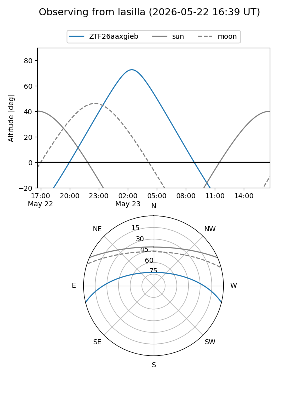
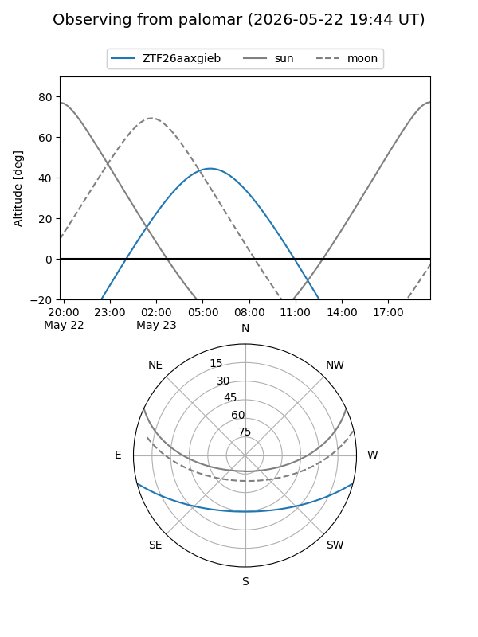

ZTF26aaxgieb
Target ZTF26aaxgieb at 2026-05-23 07:53
Aliases and brokers:
lsst-FINK: link
lsst-Lasair: link
lsst-ALeRCE: link
ztf-FINK: link
ztf-Lasair: link
ztf-ALeRCE: link
alt names
ZTF26aaxgieb (ztf,fink_ztf)
Coordinates:
equatorial (ra, dec) = 205.9310,-11.91140
equatorial (HMS+DMS) = 13:43:43.44,-11:54:41.05
galactic (l, b) = (322.6250,+48.95078)
Flags:
Photometry:
last ztfg=19.38
1 ztfg detections
Lightcurve
Visibility


Additional plots